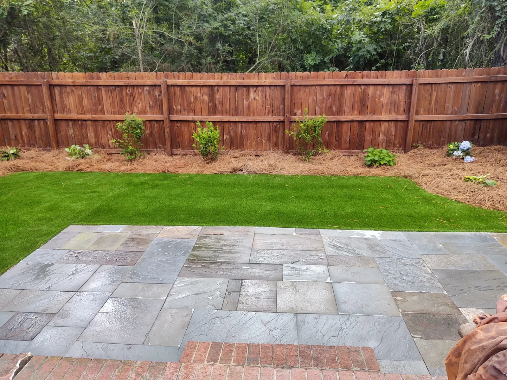
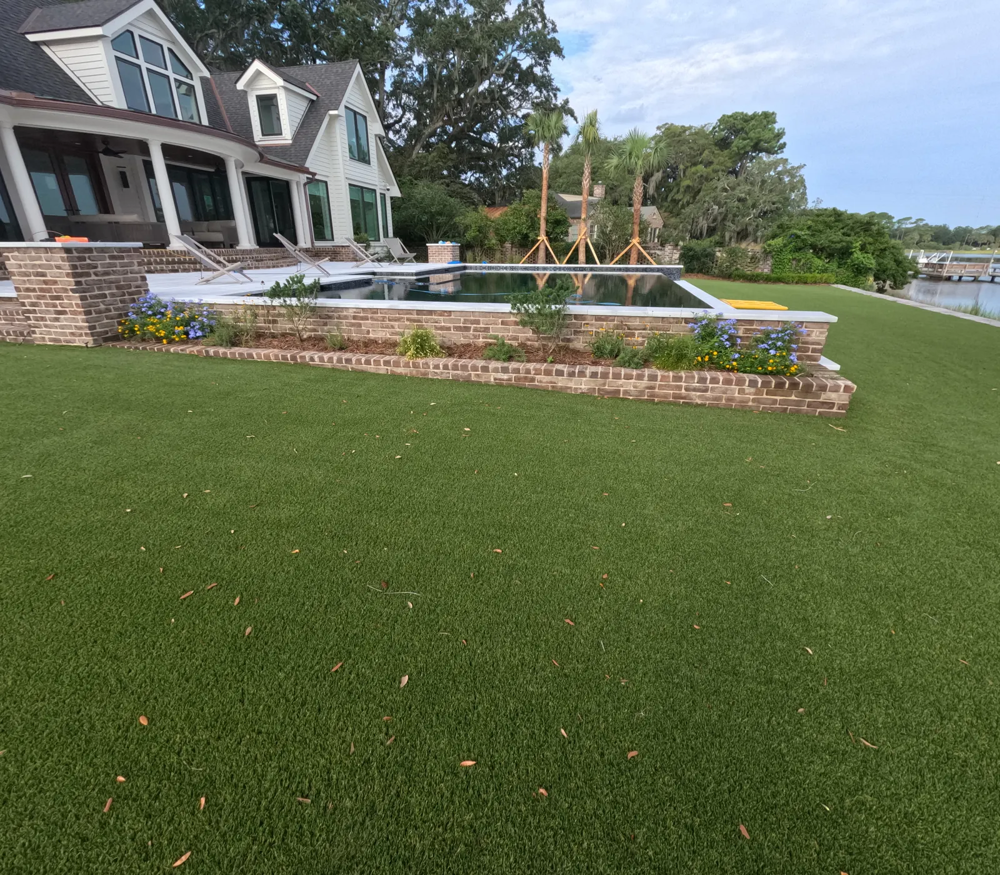

Does Artificial Grass Save Money in Charleston?

The Short Answer
Artificial grass saves real money in Charleston in one situation: your sprinklers run through your house meter, so you pay sewer on the water that goes on the lawn. On a separate irrigation meter the water savings alone do not come close to paying for turf, and the honest reasons to buy it are shade, dogs, small courtyards and not mowing.
We went through ten years of Charleston Water System’s annual reports to find out. Here is everything that goes into the math, so you can run it on your own yard.
What Turf and Sod Cost to Put In
Artificial turf starts at $13 per square foot, including the base preparation. Sod is $750 a pallet installed, not counting digging out the old grass or regrading. Turf lasts 15 to 25 years, and longer depending on use and maintenance.
So turf costs more on day one. The question is whether what you stop paying for afterwards makes up the difference.
Charleston Water and Sewer Rates, 2016 to 2026
Charleston Water System publishes its residential rates in each year’s annual report. These are the charges per Ccf after the monthly minimum, effective January 1. One Ccf is 748 gallons.1,2,3
| Year | Water, inside city | Water, outside city | Sewer, inside city | Sewer, outside city |
|---|---|---|---|---|
| 2016 | $1.70 | $3.24 | $7.31 | $9.83 |
| 2017 | $1.70 | $3.24 | $7.31 | $9.83 |
| 2018 | $1.76 | $3.36 | $7.57 | $10.23 |
| 2019 | $1.83 | $3.48 | $7.78 | $10.51 |
| 2020 | — | — | — | — |
| 2021 | $1.97 | $3.74 | $8.21 | $11.10 |
| 2022 | $2.10 | $3.97 | $8.87 | $12.60 |
| 2023 | $2.23 | $4.20 | $9.53 | $14.10 |
| 2024 | $2.37 | $4.43 | $10.18 | $15.60 |
| 2025 | $2.52 | $4.70 | $10.72 | $16.50 |
| 2026 | $2.68 | $4.99 | $11.29 | $17.45 |
2017 had no increase. The 2020 report repeats the 2019 figures, so 2020 is left blank rather than guessed.
Over those ten years, water rose 58 percent inside the city and 54 percent outside; sewer rose 54 percent inside and 78 percent outside.
The Sewer Rule That Changes the Answer
For a single-family home without an irrigation meter, Charleston Water bills sewer on 95 percent of the water you use, and that includes what the sprinklers put on the lawn. Irrigation meters are not charged for sewer. There is a monthly cap on the sewer charge: $211.98 inside the city and $320.50 outside.3
So in 2026 a Ccf of water on your lawn costs one of two prices:
| Inside city | Outside city | |
|---|---|---|
| Through an irrigation meter | $2.68 | $4.99 |
| Through the house meter (water plus 95% sewer) | $13.41 | $21.57 |
Same water, same grass: about 5 times the price inside the city and 4 times outside.

What That Means for a Real Lawn
Take a 5,000 square foot lawn getting an inch of water a week through a 30-week growing season. That is about 93,500 gallons a year if the sprinklers do all of it, and half that if rain covers half.
| 5,000 sq ft, per year, 2026 rates | Inside city | Outside city |
|---|---|---|
| Irrigation meter | $168–$335 | $312–$624 |
| House meter | $838–$1,226 | $1,348–$2,001 |
On the house meter the monthly sewer cap matters: in a heavy watering month much of the extra water goes over the cap and escapes sewer. The house-meter figures assume indoor use of about 6 Ccf (4,500 gallons) a month, roughly two or three people at the EPA’s average of 82 gallons per person per day at home.4 A bigger household reaches the cap sooner and saves less.
Now carry that over fifteen years, the low end of turf’s life, with rates rising 4.5 to 6 percent a year, about the pace of the last ten. Per square foot of lawn:
| Watering over 15 years, per sq ft | Inside city | Outside city |
|---|---|---|
| Irrigation meter | $0.70–$1.56 | $1.30–$2.90 |
| House meter | $3.48–$5.71 | $5.60–$9.32 |
Against turf at $13 a square foot, outside the city on a house meter, watering alone comes to roughly 45 to 70 percent of it over fifteen years. Inside the city on a house meter it is about 25 to 45 percent. On an irrigation meter it is about 5 to 10 percent inside the city and 10 to 20 percent outside.
These are our own calculations from the published rates, on the assumptions above. They leave out mowing, feeding and treating a lawn, and replacing one that dies, all of which turf also removes.
If Your Only Complaint Is the Water Bill
Then price an irrigation meter before you price turf. Outside Charleston Water, ask your own utility the one question that matters: do you bill sewer on irrigation water, and what does an irrigation meter cost? We install and connect irrigation systems, including the backflow protection the code requires.

Heat Is a Cost Too
Penn State’s Center for Sports Surface Research finds synthetic turf is generally 35 to 55°F hotter than natural grass, and that watering it only helps for a while: the surface temperature rebounded within about 20 minutes.5
In a Charleston July, full-sun turf is not a barefoot surface in mid-afternoon. On one project we installed a sprinkler system to spray and cool it, which is worth planning for if the area is in full sun and gets used barefoot.
What Turf Still Needs
It is not zero maintenance. Turf needs washing and power brooming when dirt and leaves build up, and a top-up of sand afterwards; under oaks that is an annual job. For dogs, use the antimicrobial sand infill rather than plain sand.
And it does wear out. At the end of its life it comes up and is replaced, so any long-term comparison has to count a second installation eventually.

The Part That Is Not About Money
Most people who ask us about turf are not running a spreadsheet. They are tired of a lawn that will not grow under their oaks, a dog that has worn a track along the fence, mud at the back door, or a brown yard all winter. Those are good reasons.
The way we answer the other worry, that it feels like paving the yard with plastic, is also how we design these jobs: make the turf smaller and the planting beds bigger. Put turf where you walk and play, and plant the rest.
So, Does It Save Money?
- House meter, outside the city, a sunny lawn you water all season: the water and sewer you stop paying covers a real share of the turf over fifteen years, before counting mowing and re-sodding. Price an irrigation meter first.
- Irrigation meter, or a lawn you barely water: no. Buy turf for what it does, not for what it saves.
- Shade, dogs, courtyards, around a pool: you were going to keep paying for grass that fails. Turf wins there, and money is only part of why.
If you want us to run the numbers on your yard, bring a summer water bill. Get in touch and we will measure the lawn, check which meter your irrigation is on, and price it both ways.
Sources
- Charleston Water System, Annual Comprehensive Financial Reports, 2016-2025, statistical section: Water and Wastewater Rates for the last ten years. Source
- Charleston Water System, Water Rates, effective January 1, 2026. Source
- Charleston Water System, Sewer Rates, effective January 1, 2026. Source
- U.S. EPA WaterSense, Statistics and Facts. Source
- Penn State Center for Sports Surface Research, Surface Temperature of Synthetic Turf. Source
Frequently Asked Questions
Does artificial grass save money in Charleston?
Mostly when your sprinklers run through the house meter, because Charleston Water bills sewer on that water. On a separate irrigation meter the water savings alone do not come close to paying for turf.
Does Charleston Water charge sewer on sprinkler water?
Yes, for single-family homes without an irrigation meter: sewer is billed on 95 percent of metered water, up to a monthly cap of $211.98 inside the city and $320.50 outside (2026). Irrigation meters are not charged for sewer.
How much does artificial turf cost compared to sod?
Turf is from $13 per square foot including base preparation. Sod is $750 a pallet installed, not counting dig-out or regrading.
How long does artificial turf last?
15 to 25 years, and longer depending on use and maintenance.
Is artificial turf too hot in the summer?
In full afternoon sun, yes: Penn State finds synthetic turf generally 35 to 55 degrees Fahrenheit hotter than natural grass. On one project we installed a sprinkler system to spray and cool it.
See It Built
Projects where we put this into practice.


Planning a Project of Your Own?
See everything we design and build, or get in touch to talk through your ideas with Doug and Zach.